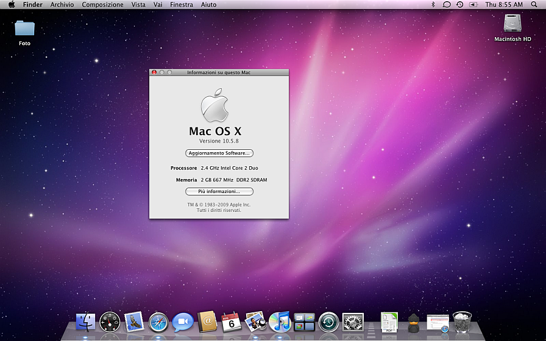
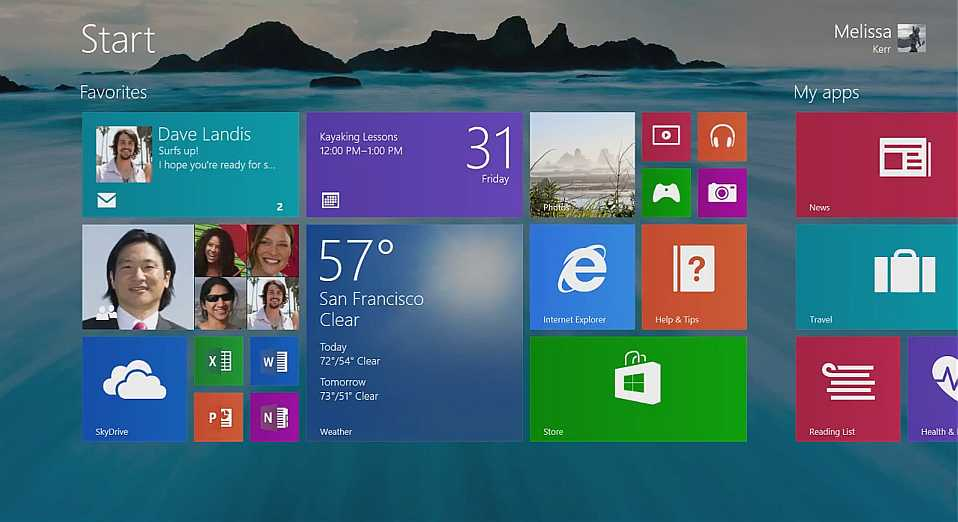
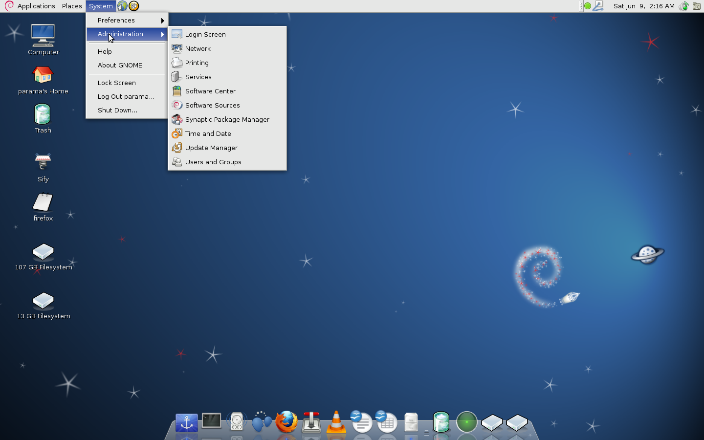

Mac OS X
OS X , precedentemente noto come Mac OS X è il sistema operativo sviluppato da Apple Inc. per i computer Macintosh, nato nel 2001 per combinare le note caratteristiche dell'interfaccia utente del Mac OS classico con l'architettura di un sistema operativo di derivazione UNIX della famiglia BSD. Nonostante il nome utilizzato sino alla versione 10.7.5, Mac OS X è un'altra versione rispetto a Mac OS nato nel 1984 con i primi computer Apple: venne completamente riscritto ed è di fatto un sistema operativo differente, di tipo UNIX certificato IEEE compliant al 100% con lo standard POSIX. Apple ha rilasciato il codice sorgente del kernel del sistema con licenza open source.
Windows 8.1
Windows 8.1 è una versione di Windows NT famiglia di sistemi operativi e di un aggiornamento per Windows 8 . Prima ha presentato e rilasciato come beta pubblica nel giugno 2013, è stato rilasciato in produzione il 27 agosto 2013, e ha raggiunto disponibilità generale il 17 ottobre 2013, quasi un anno dopo il rilascio di vendita al dettaglio del suo predecessore. Windows 8.1 è disponibile gratuitamente per le copie retail di Windows 8 e di Windows RT utenti tramite Windows Store . Gli utenti che hanno ottenuto 8 al di fuori di copie di vendita al dettaglio o impianti pre-caricati (cioè, volume licensing ) devono avere 8.1 attraverso nuovi supporti di installazione dal rispettivo abbonamento o canale enterprise. Secondo i criteri del ciclo di vita del software di Microsoft, installazione di Windows 8.1 è necessario per mantenere l'accesso al supporto mainstream di Windows 8 dopo il 12 gennaio 2016.
Debian
Debian , creata dal Debian Project, è un sistema operativo per computer composto solo da software libero, anche se può usare, tramite l'aggiunta di appositi repository, anche software proprietario o software libero basato su software non libero. Viene sviluppata attraverso la collaborazione di volontari da ogni parte del mondo e fornisce più di un semplice sistema operativo: viene distribuito con oltre 37 000 pacchetti, programmi già compilati e impacchettati in modo tale da permettere installazioni facili. La forma principale, Debian GNU/Linux utilizza Linux come kernel (la parte centrale di un sistema operativo) e programmi di utilità provenienti dal progetto GNU. Per questo prende il nome di GNU/Linux. Il nome Debian è stato coniato dal fondatore del progetto, Ian Murdock, unendo il proprio nome e le prime tre lettere di quello della sua fidanzata (ora ex-moglie) Debra.
NetBSD
NetBSD è un sistema operativo Unix-like derivato da BSD UNIX altamente portabile, gratuito, disponibile per molte piattaforme, dai server alpha a 64 bit fino ai dispositivi palmari. Il suo design pulito e le sue caratteristiche avanzate lo rendono idoneo a ambiti sia produttivi sia di ricerca. È completamente disponibile in forma sorgente ed ha una ricca dotazione di applicazioni.